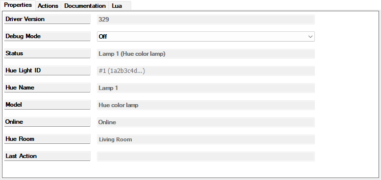
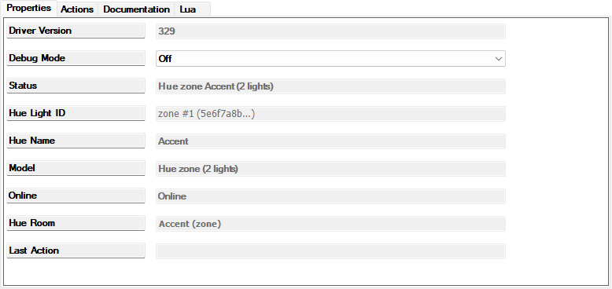

A Hue Light is one Philips Hue light (a bulb, strip or lamp as the Hue app lists it) shown as an ordinary Control4 light: on, off, dimming, and colour or colour temperature when the light supports them. It is created by the Hue Bridge device's Import All New or Add From Hue action, normally never added by hand, and it is driven entirely by the bridge: the bridge tells it what its light can do and what state it is in, and passes your commands on to the light. Changes made in the Hue app or with Hue switches show on this device within a second or two, because the bridge listens to the Hue bridge's event feed.
The same device can stand for a whole Hue zone or room when the bridge's Add From Hue created it from its zones and rooms: a zone light, named after the zone (Bedside Lights), or a room light, named after the room with Lights added (Master Bedroom Lights). Its one tile switches, dims and colours every lamp of the zone or room at once, with a single request to the bridge, and shows what they are doing. Everything on this page applies to it; the differences are noted where they occur.
To Composer this is an ordinary dimmer: programming, keypad buttons, Navigators and Advanced Lighting Scenes use it like any other light. Programming also has two commands of its own for it, Raise Level By and Restore Saved Level (below). A tap on its tile that turns it on, "Turn On" in programming, "Toggle" while it is off and a tap on the top keypad button all turn it on the way its On Mode says: with Preset, the default, at its Default On Brightness, 100 % unless changed; with Previous, at the level it had when it went off ("On Mode" below). They never use the power-on level set in the Hue app. A light with colour turns on in the colour its colour on mode asks for, normally Control4's On colour ("Colours" below). Its on, off and level-changed events fire for changes made in the Hue app, by a Hue dimmer switch or by a Hue automation too. A whole-room command reaches Hue lights at ten a second, so a room with many of them finishes over a few seconds. A command that does not reach the Hue bridge never shows as done, and after 5 minutes without an answer from the bridge the light goes offline until the bridge answers again ("When the Hue bridge does not answer" below).
On a keypad, or on a Control4 Switch V2 or Essential Switch set to Use as 2 Button Keypad, it behaves like a Control4 dimmer once the buttons are bound to its Top Button Link and Bottom Button Link in Connections (listed under its Control Outputs; a single button goes to Toggle Button Link). A tap on the top button ramps the light to its Default On Brightness, 100 % unless changed: up from off or from a lower level, and down to it from a higher one (a light already at it stays as it is). With On Mode Previous, a tap from off ramps it to the level it had when it went off instead. A tap on the bottom button ramps it to off, and a toggle button ramps it on, as the top button does, while it is off and to off while it is on. Unless the click rates were changed, a ramp across the whole range takes 3 seconds and a shorter one its share: off to 100 % in 3 seconds, 50 % to off in 1.5 seconds, 70 % to 100 % in 0.9 seconds. A tap on any of the light's buttons while it ramps stops it, as on a Control4 dimmer: the lamp halts where it is and settles there within a second, whether you tap the top, the bottom or the toggle button, so the light never turns round, and one stopped just before it reaches off stays on, at 1 %. A second tap on the same button within about 0.6 seconds of the first is part of a double tap: it starts nothing and stops nothing, and the light goes on to where the first tap sent it, so programming on the keypad's double-tap event can run without the light changing course (a double tap on a toggle button turns the light on, or off, as one tap would; a triple tap the same). To stop a ramp, tap a little later than that. A button held for longer than 0.4 seconds makes Hue brighten the light (top, or toggle while the light is off) or dim it (bottom, or toggle while it is on), the full range in 5 seconds and at that speed from any level (from 50 % to full in 2.5 seconds), until the button is let go, as Hue's own dimmer switch does; held while the light ramps, the button first stops the ramp and then brightens or dims from where it stopped. Held while the light is off, the top or toggle button turns it on at 1 % and brightens from there (let go within about a second of pressing and it stays at 1 %); the bottom button does nothing. A tap that comes within a second after letting go of a hold on the same button is ignored, because some keypads send one. The keypad's LEDs follow the light's state, including changes made in the Hue app: a top or toggle button is lit blue while the light is on, a bottom button while it is off. The bridge's manual, chapter 11, has the setup steps; "Keypad settings" below says how to change the 100 %, the 3 seconds, the 5 seconds and the blue, and "Colours" what colour the light turns on and off in.
A tap stops any ramp of the light, not only one a tap started: a level that programming, a Navigator or an Advanced Lighting Scene sets with a ramp time (a slow wake-up ramp from programming, for example) stops where it is at a tap too, as a Control4 dimmer stops whenever it is tapped while it dims. Control4's own stop command, which an Advanced Lighting Scene sends to end its ramp, now stops the lamp the same way, and so does a keypad button bound to the light's Brightness Stop link in Connections, which Control4 provides for stopping a ramp. Up to release 1.3 both only set the tile to the level the device knew while the lamp went on to the end of its ramp. While the light ramps, the device tells Control4 once, at the start, where the ramp goes and how long it takes, and once more when it ends or stops, as Control4 asks its dimmers to do: Navigators move the tile's slider along from the first message and stop it at the second, and the light's level-changed event fires at the end or the stop rather than on the way. At a stop the device works out from how long the ramp ran where the lamp has got to, and sends the lamp that level with a one-second glide, so the lamp halts smoothly rather than with a jump; the tile shows that level at once, and Hue reports the same level straight away, so the tile, the Hue app and the lamp agree. Any other brightness command during a ramp takes over from it: the slider, "Turn On", "Turn Off", "Toggle", a level, Raise Level By or Restore Saved Level. A colour or colour temperature change leaves the ramp going. How the lamps ramp and stop was watched on the house system on 2026-11-09, on a single light and on a zone light; taps from a real keypad, the Brightness Stop link and the tile's moving slider had not been watched as this is written.
A zone light or room light is on while any lamp of its zone or room is lit, and its level is the average brightness of the lit lamps. A tap, the top button, "Turn On" and "Toggle" while it is off set every lamp to the zone or room light's own Default On Brightness (100 % unless changed), as on a single light; with On Mode Previous they bring every lamp back at its own level instead, so lamps set to different levels stay different; the slider, or a level from programming or a lighting scene, sets every lamp to that level, so the differences between the lamps are levelled out; a keypad hold dims the zone and keeps those differences, as Hue's dimmer switch does: smoothly, lamp by lamp, while up to 10 of its lamps are on, and in steps of a second with more (or while a time-of-day or moving scene plays there). Keypad taps ramp and stop a zone or room light as they do a single light, every lamp at once, with one request to the bridge for the start and one for the stop: a tap ramps every lamp to the Default On Brightness or to off over the click rate, and a tap while they ramp stops them, every lamp halting and settling within a second at the level the tile shows. Hue keeps the time of such a ramp to a level for a whole zone or room, and the stop is smooth on every lamp (watched on the house system on 2026-11-09); it ignores the time given for a relative dim of a whole zone or room, which is why a hold goes lamp by lamp. Colour and colour temperature go to all the lamps of the zone or room in one request, and so does the On colour of a turn-on (with colour on mode Previous each lamp keeps its own colour); a lamp that cannot show them should ignore them (not seen on the house system as this is written, where every lamp can show both). The tile has a colour wheel if any lamp has colour and a temperature control if any has colour temperature, and it shows the colour of the first lit lamp showing a colour, else the colour temperature of the first lit lamp showing one, because Hue reports no colour for a zone as a whole. Hue takes about one command a second for a zone or room (ten for single lights), so after a first burst of three a fast slider drag is sent as one request a second while the tile moves smoothly, and the lamps end where the slider ends; a hold's start and stop, and a keypad tap's start and stop, go out at once. Turning a zone or room light off also ends any Hue scene playing there, so a Hue Scene device of the same zone or room goes off with it (the bridge's manual, 9.4; seen on the house system on 2026-10-25 with a room light).
The 100 %, the 3 seconds of a tap, the 5 seconds of a hold and the blue LEDs above are the defaults of the settings a Control4 dimmer normally lists on its Properties page, and Composer lists them for this device too, on its Properties tab above the driver's own rows (Advanced Properties):
Composer shows the rates in seconds (5.000) and the values the device is using. Type a new level or rate and press Enter: Composer sends it then, and the next button press uses it. The device takes rates from 0 to 6 000 000 ms (100 minutes), the longest fade Hue takes. A value outside these ranges, or one that is not a number, is refused: the device keeps the value it had and reports it back, so Composer shows that value again (a Default On Brightness of 0 would make the top button turn the light off). A device whose click rates were changed in Composer before keeps its values, and they now count for the whole range too: a tap across the whole range takes as long as before and a shorter one less; type 3.000 into each for the new default. Up to release 1.4 the device took rates up to 86 400 000 ms (24 hours), although no hold took longer than 100 minutes. A rate above 6 000 000 ms that an earlier release stored goes back to its default at the update (3 seconds for a click rate, 5 for a hold rate).
A zone or room light has the same settings, its own. Showing them changed what this device type can do in Control4, its capabilities, so after the update that brought them they appear only once the controller has been rebooted from System Manager, as after any such update (the bridge's manual, chapter 3); until then the defaults apply. The update that brought the On Mode, the colours and the 100-minute limit is such an update. Until that reboot Composer shows the old page, and the light turns on at its Default On Brightness as before.
The On Mode decides the level for every way of turning the light on without choosing a level: a tap on its tile, "Turn On" in programming, "Toggle" while it is off, and a tap on the top or toggle button of a bound keypad while it is off. Composer lists it with the keypad settings, with two choices:
While the light is on, a tap on the top button and "Turn On" go to the preset's level with Preset, and to the Default On Brightness with Previous: up from a lower level, down from a higher one. A slider move, a level from programming or a lighting scene, Raise Level By and Restore Saved Level go to the level they name, whatever the On Mode. A held top button still starts a light that is off at 1 %. A light turned on in the Hue app or with a Hue switch comes on as Hue decides, at its last level.
The device tells Control4 which preset the light is going to and which one it sits at, as Control4 asks of its dimmers, so Control4 features that follow presets, such as the Daylight Agent, can follow the light (not tried on the house system as this is written). Control4's documentation says a tap on the tile follows the On Mode too; that had not been checked on the house system as this is written. Control4 added the On Mode in OS 3.3.2; on an older controller the light uses Preset.
Ramp times. "Turn On", "Turn Off" and "Toggle" in programming, a tap on the tile, and a level sent without a ramp time use the default ramp time that Control4 keeps for each light (its default brightness rate, if Composer lists it on the settings page). Until it is set they act at once, as before; keypad taps use the click rates. A ramp time from programming or a lighting scene can be up to 100 minutes; a longer one is cut to 100 minutes.
Control4 gives every colour light an On colour, a Dim colour and a colour on mode, so that lights of every brand turn on in the same colour. Composer lists them with the keypad settings of a light that has colour or colour temperature. The device uses them; up to release 1.4 it ignored them, and a light turned on in its last colour. Dealers: set each colour light's On and Dim colours and its colour on mode in Composer. Until then a light turns on in the On colour Composer shows, which is Control4's default.
The colour on mode has three choices:
With Preset and Fade, a turn-off that has a fade time fades toward the Dim colour as the light goes off: a tap on the bottom button, for example, or a level of 0 with a ramp time. An instant off sends no colour. Hue keeps the colour of a lamp that is off, so a lamp turned on afterwards in the Hue app or with a Hue switch comes on in the Dim colour. A held button changes only the brightness while you hold it; about half a second after you let go, the colour glides to the blend for the new level over a second.
When the Dim colour's checkbox in Composer is not ticked, Control4 makes the Dim colour the same as the On colour, so the light shows the On colour at every level. A colour picked while the light is off is kept and shown at the next turn-on from Control4, in place of the On colour. A zone or room light sends one colour to all its lamps; a lamp that cannot show it should ignore it. A white-only light never gets a colour, and a light with colour temperature only takes the nearest white. A light turned on in the Hue app, with a Hue switch or by a Hue automation comes on as Hue decides, and the device does not change its colour afterwards. Changing a colour setting in Composer never moves a light by itself: the next turn-on uses it.
This device has two programming commands of its own, for a light that should be brighter for a while and then go back to the level it had, for example while a motion sensor sees someone. Composer's Programming view lists them under the device with its other commands. They act only when programming runs them, never by themselves, and they work the same on a zone or room light.
| Command | Choices | What it does |
|---|---|---|
| Raise Level By | Points: 1 to 100, default 30. Ramp (ms): 0 to 60000, default 1000 (one second). | Saves the light's current level (0 when it is off), then sets the light to the saved level plus the points, at most 100 %, fading over the ramp time: 40 % becomes 70 %, 80 % becomes 100 %, and a light that is off turns on at 30 %. While a level is saved, another Raise Level By saves nothing new and does not climb: it sets the light to the saved level plus the points again. If someone has changed the light by hand since the raise, that level becomes the new starting point instead, so a raise never lowers a light someone turned up. |
| Restore Saved Level | Ramp (ms): as above. | If the light still stands at the level the last raise set (within 1 point, as Hue reports it), fades it back to the saved level, or turns it off when the saved level was 0. If the light was changed since, to another level or off, leaves it as it is. Either way the saved level is then forgotten. With no saved level it does nothing. |
Every outcome is one line in Last Action, for example Raised from 40 % to 70 % (saved 40 %), Restored to 40 %, Not restored: changed to 55 % since the raise; saved level forgotten or Nothing to restore. While the device's light is gone from the bridge, or its connection to the bridge is removed, both commands are refused with a line in Last Action, and a saved level is kept. A saved level outlasts a driver update, a Director restart and a controller reboot. Both commands reach the light the way a slider move does, at the same pace. On a zone or room light the level is the zone's, the average of its lit lamps, and both commands set every lamp to one level, as the slider does. The update that brought the two commands changed no capability, so it needed no controller reboot.
An example. Two lamps, Lamp 1 and Lamp 2, should get 30 points brighter when a Hue Motion Sensor device (a Hue motion sensor or a MotionAware area; the bridge's manual, chapter 14) senses motion, and go back 5 minutes after the last movement:
300 and click the row's Set button. The device then shows motion until 5 minutes after Hue reports that the motion has ended, which Hue does about 10 seconds after the last movement (measured on a MotionAware area): about 5 minutes and 10 seconds in all, started again by any movement before then.Lamp 1 and on Lamp 2, with Points 30 and Ramp (ms) 1000.With Lamp 1 at 40 % and Lamp 2 off, someone walks in: Lamp 1 fades up to 70 % and Lamp 2 comes on at 30 %. About 5 minutes and 10 seconds after the last movement, Lamp 1 fades back to 40 % and Lamp 2 goes off. If someone set Lamp 1 to 55 % in the meantime (in the Hue app, on its tile or with a keypad), it stays at 55 %: it no longer shows the level the raise gave it, so someone chose a new level after the raise, and putting back the old one would undo that choice. A lamp switched off meanwhile stays off for the same reason. Its old level is forgotten, and the next motion raises the lamp from where it now is. The bridge's manual has this example in full in chapter 10, and the motion devices in chapter 14.
The light can do only what the Hue bridge passes on. When the bridge does not answer (it is restarting or updating, has no power or network, has moved to another address, or refuses the pairing), the light tells Control4 so, in two steps, and comes back by itself:
Offline, the tile is disabled (greyed out) on Navigators, keypad buttons bound to the light do nothing and their LEDs keep the last known state, and commands from programming, Advanced Lighting Scenes or anywhere else are dropped, not kept for later. Status says why and since when, for example Hue Bridge not answering since 14:02 (the table at the end has every wording), and the Hue Bridge's Attention reads Hue devices offline since 14:07: the bridge has not answered since 14:02; they come back by themselves when it answers. Every Hue Light, zone light, room light and Hue Scene goes offline at the same moment, and every Hue Motion Sensor's Online turns No.While the bridge is offline the light's own reachability is not known, so Status shows the bridge's text; once the bridge is back, a lamp without power reads Offline again by itself. A controller reboot or a driver update during a long outage does not start the 5 minutes again: the light goes offline at the bridge's first failed check after the start, within a minute, and stays online if the bridge answers. A bridge that loses its power cannot say so: in a quiet house, where nobody uses a Hue device, the driver notices it only when the bridge's event feed has been silent for 10 minutes, so the light goes offline about 15 minutes after the power cut; a command sent meanwhile fails, and the 5 minutes then count from that command (the bridge's manual, chapter 4).
The device fills in the rows below itself, most of them from what the bridge tells it; the only one you change is Debug Mode, and only when asked. The keypad settings are described above.

The Properties page of a Hue Light for the lamp Lamp 1.

The same page for a zone light, the Hue zone Accent: Status Hue zone Accent (2 lights) and Hue Room Accent (zone).
| Property | What it shows |
|---|---|
| Driver Version | The build number of the installed driver, for example 116. It matches the bridge's after an update; after an update during which Composer asked Restart Director?, only once the controller has been rebooted from System Manager (the bridge's manual, chapter 3). |
| Debug Mode | Off (default) or On. On writes many more lines to this device's Lua output (the lower part of its Lua tab); developer use only. Remember that a changed property reaches the driver only when you click the row's Set button. |
| Status | In normal use the Hue name and the light's model, for example Left Bedside Light (Hue color lamp) (Porch (unknown model) until the model is known). A zone light reads Hue zone Bedside Lights (2 lights), a room light Hue room Master Bedroom (9 lights). Other texts are explained below. |
| Hue Light ID | #12 (1a2b3c4d…): the light's number on the bridge (the same number the bridge's lists show after the name) and the start of its long identifier. Blank until the bridge has linked the device; the long identifier alone for a moment when the device remembers its light but has not heard its number yet. For a zone or room light, zone #2 (5e6f7a8b…) or room #5 (…): the group's number on the bridge and the start of its identifier. |
| Hue Name | The light's name in the Hue app, as the bridge passes names on: without control characters or spaces at either end, and at most 100 characters long. For a bulb or lamp that is the only light of its Hue device, as most are, that is the name the Hue app shows for it, which Hue keeps on the device, and the name the bridge compares the Composer name with; for one of several lights of one Hue device (a fixture with more than one light in it), that light's own name. Right after the bridge driver restarts, the row keeps the name it showed until the bridge has read its devices, a few seconds later. From 1.2 the device's name in Composer and the light's name in the Hue app are kept the same by the bridge: rename the device in Composer and the light is renamed in the Hue app, rename the light there and the device follows, and this row shows the new name at once (the bridge's manual, 8.2). Hue takes names of at most 32 bytes; a longer Composer name waits for the bridge's Resolve Names. For a zone or room light, the zone's or room's name, which is not kept in step with the device's; a room light's Composer name, Master Bedroom Lights, is not counted as a difference. |
| Model | The light's model as Hue reports it (its product name, else its model number), for example Hue color lamp or Hue white lamp, passed on as the Hue Name is. For a zone or room light, Hue zone (2 lights) or Hue room (9 lights); the count follows the lamps in it. |
| Online | Online when the bridge reports the light connected; Offline when it reports the light unreachable (no power, for example), when the Hue bridge has not answered, or has refused the pairing, for 5 minutes (above), or when the device is not bound, gone or forgotten; blank while the bridge has not said either way yet (for ever, harmlessly, for a light whose Hue device reports no Zigbee connection). While Offline, and while the device waits for the bridge, the tile is disabled on Navigators. A zone light is Offline while its zone holds no lights. |
| Hue Room | The Hue room the light belongs to, for example Master Bedroom; blank for a light in no Hue room. It follows a move in the Hue app within seconds; moving the device to another Control4 room does not change it. For a zone light, the zone's own label, Bedside Lights (zone); for a room light, the room's name. |
| Last Action | The result of the last Raise Level By or Restore Saved Level (above), or Forgotten by the bridge after the bridge released it. For a forgotten zone light it carries the instruction, Delete this device, or bind it again and use Link Device on the Hue Bridge, because that device's Status is shorter. |
From release 1.2 this device has no actions: its Actions tab is empty, and everything is on the Hue Bridge. Its two programming commands, Raise Level By and Restore Saved Level (above), are not actions and stay. Where the two earlier actions went:
| Up to 1.1 | From 1.2 |
|---|---|
| Adopt Hue Name | Not needed: the bridge keeps the device's name and the light's name the same by itself. A name that cannot follow (Hue refuses it, or it differed already when 1.2 was installed) is listed in the bridge's Attention and settled with the bridge's Resolve Names. |
| Forget This Light | The bridge's Forget Device, which asks for confirmation. The device stays in the project for you to delete, and the Hue light is listed under the bridge's Add From Hue again. |
| Status | Meaning | What to do |
|---|---|---|
Left Bedside Light (Hue color lamp) | Linked and working. | Nothing. |
Hue zone Bedside Lights (2 lights), Hue room Master Bedroom (9 lights) | A zone light or room light, linked and working; the count is the lamps in the zone or room. | Nothing. |
Not bound to a Hue Bridge | The device has no connection to a Hue Bridge: it was added by hand, its connection was removed, or the bridge device was deleted and re-added. In the first minute after a Director restart or a controller reboot it can also show while the connection is in place. | Right after a restart or reboot, wait a minute: the device looks for its connection again after 5, 15, 30 and 60 seconds and the text corrects itself. Otherwise open Composer's Connections view (the button below the System Design tree), select this device and connect its Hue Bridge input to the bridge's Hue Lights output by dragging the bridge from the lower pane onto that row. A device that remembers which Hue light it was is linked by the bridge the moment it is connected, no click needed. A device added by hand then reads Bound; waiting for the bridge: see the next row. |
Bound; waiting for the bridge | Connected to the bridge, but the bridge has not linked it to a Hue light yet. | Wait a few seconds if the bridge is starting; otherwise make sure the device's Composer name is exactly the Hue light's name, run Link Device on the bridge and pick the first line of its Device row (Every bound device the bridge does not know yet, by its own id or name, or Every device with a suggested match (…)), which links this device to the one Hue light of that name. |
Gone from the Hue bridge since 2026-10-22 09:15; Link or Forget Device | The Hue light this device stood for was deleted or replaced on the Hue side. The device, its room and its programming are kept; the tile is disabled. | Usually nothing: a bulb that comes back to the bridge with the same radio (deleted and added again in the Hue app, or after a reset of the bridge) is re-linked to this device by itself. Otherwise, on the bridge, Link Device to point the device at the replacement light; or Forget Device and delete the device. A new light with this device's name in the same Hue room is listed in the bridge's Attention as a likely replacement and suggested in Link Device. |
Hue zone Bedside Lights has no lights; nothing to control | Every lamp was removed from the zone (or room) in the Hue app. The device is Offline and drops commands; it is not counted as missing, because the zone still exists. | Put a lamp in the zone in the Hue app and the device is Online again by itself; or leave it. |
Hue Bridge not answering since 14:02; also Hue Bridge not at its address since 14:02, Hue Bridge refuses the pairing since 14:02, Hue Bridge not usable since 14:02 (see its Status) and Hue Bridge not paired since 14:02 | For 5 minutes the Hue bridge has not answered (or another bridge answers at its address; the bridge refuses the pairing; it cannot be used, after a failed TLS check for example; the pairing was removed with Forget Pairing). 14:02 is when that began (10-26 14:02 on another day). The device is Offline, its tile is disabled and it drops commands; every Hue device reads the same ("When the Hue bridge does not answer" above). | Nothing on this device: it comes back by itself the moment the bridge answers. The Hue Bridge's Status and Attention say what is wrong with the bridge (its power, its address, the pairing) and what to do. |
Zone deleted in Hue since 2026-10-24; Link or Forget Device (a room light: Room deleted in Hue since …) | The zone or room this device stood for was deleted in the Hue app. The device, its room and its programming are kept; the tile is disabled. | On the bridge, Link Device to point the device at another zone or room (a zone or room made again under the same name is suggested there); or Forget Device and delete the device. |
Forgotten by the bridge (was Hue light Desk Lamp #12). Delete this device, or bind it again and use Link Device on the Hue Bridge | The bridge's Forget Device released this device. Its connection to the bridge is gone and its tile is disabled. | Delete the device in Composer; or, to take it back, connect it to the bridge in Connections as above: the bridge takes it over on the spot. |
Forgotten by the bridge (was Hue zone Bedside Lights) | The zone light was released; the instruction (Delete this device, or bind it again and use Link Device on the Hue Bridge) is in Last Action. | As the row above. |
When this device cannot act (not bound, waiting, gone or forgotten, the Hue bridge offline for 5 minutes, or a zone light whose zone has no lights) it drops the commands it receives, and Status says why. Colour and colour temperature controls appear on Navigators only when the light has them; brightness is shown in whole percents, never 0 % while the light is on, and a colour set while the light is off is applied when Control4 next turns it on, in place of the On colour (a turn-on from elsewhere, the Hue app for example, drops it).
In the System Design tree this device shows a small Hue dimmer switch as its icon if it was created by a build that has the Hue icons; one created by an earlier build keeps Control4's standard bulb. In a room's List View it always shows the standard light icon.
Hue Bridge, Hue Light, Hue Scene and Hue Motion Sensor drivers for Control4. Copyright 2026 Cory Fair; licensed under the Apache License, Version 2.0 (the LICENSE and NOTICE files that come with the drivers). Philips Hue and Hue are trademarks of Signify Holding B.V.; Control4 and Composer are trademarks of Snap One, LLC. This project is not affiliated with, endorsed by or supported by Signify or Snap One.